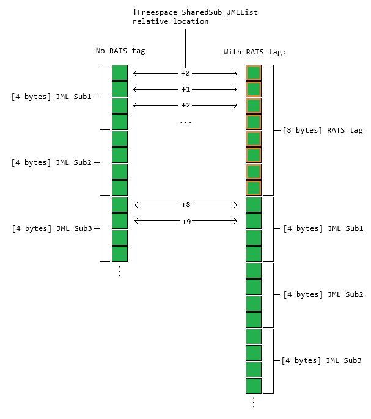
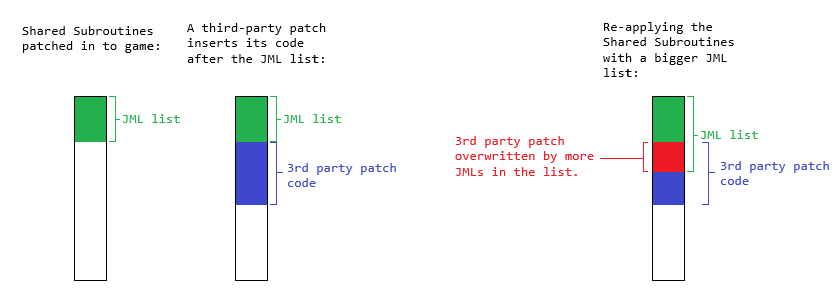
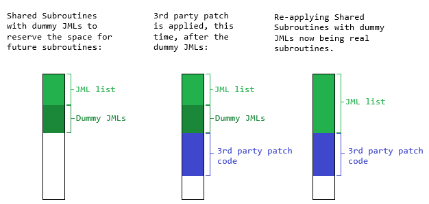

What this patch does is enable you to have “universal availability” subroutines accessible anywhere in your ROM, and also by other third-party patches, tools, code without the need to have duplicate codes that can waste space in your game. The reason for this patch is because patches commonly need a freespace (in the olden days when xkas was popular, you have to manually set them up, and Asar automatically finds those freespace), thus the code themselves can have varying locations each time they are inserted and isn't safe (if other resources calls a subroutine at an outdated address, may cause glitches or crashes).
It works like this: The game stores a list of JMLs at a fixed location. Each of these JMLs point to subroutines in a freespace. When calling routines, any code from anywhere can JSL to any of the JMLs on the list, which then jumps to the freespace subroutine. If you make changes on the subroutines so that they get relocated on the next re-insert, the JML list will be corrected and remain at the same location (provided you do not re-patch this with the !Freespace_SharedSub_JMLList being changed).
Note: To copy text inside of code blocks here, hold down CTRL and double-click the text.
C:\Users\UserName\Desktop\smw romhacking\General Tools\slogger\a.smc headered ROM is 0x100000 bytes long PC offset LoROM offset Size 0x08493C 0x10C73C 0x38BC 0x090200 0x128000 0x8000 0x098200 0x138000 0x8000 0x0A0200 0x148000 0x8000 0x0A8200 0x158000 0x8000 0x0B0200 0x168000 0x8000 0x0B8200 0x178000 0x8000 0x0C0200 0x188000 0x8000 0x0C8200 0x198000 0x8000 0x0D0200 0x1A8000 0x8000 0x0D8200 0x1B8000 0x8000 0x0E0200 0x1C8000 0x8000 0x0E8200 0x1D8000 0x8000 0x0F0200 0x1E8000 0x8000 A total of 0x6B8BC bytes of free space were found IMPORTANT: The "LoROM Offset" is what is entered in xkas as free space
BytesTaken = RatsSpace + (NumberOfJMLs * 4) ;RatsSpace: ; = 0 if you have !Freespace_SharedSub_JMLList be at banks $00-$0F (or $80-$8F using LoROM) ; = 8 otherwise ($10-$7F (or $90-$FF using LoROM)).
In case you don't know, a bank is a byte of the leftmost (or highest) 8-bit value of a 24-bit/3-byte address: the XX in $XXyyyy.
With the example above showing freespace, I choose $128000 (so I set !Freespace_SharedSub_JMLList to that address number), now look at the left two hex digits, that is bank $12, and if you haven't added any new routines or remove any, the number of bytes the JML list takes is 208 = 8 + (50 * 4). With $128000 having $8000 (32768) bytes free, that is enough space to fit the 208-byte JML list in. This results in $128000 to $1280CF now being occupied. Upon patching sharedsub.asm, asar will display the memory statistics about the JML list (including the RATs tag when needed).!NumberOfJMLs = 100 ;^The number of JMLs you expect to have. No prefix is decimal. ;Auto calculate the amount of bytes needed !NumberOfBytesNeeded #= !NumberOfJMLs*4 freecode Test: fillbyte $00 fill !NumberOfBytesNeeded print "Freespace with enough bytes is at $", hex(Test-8) ;^Minus 8 because the address defined as !Freespace_SharedSub_JMLList would be the beginning of the RATS tag. Stuff under ; "freecode" would be placed at the beginning of the freespace plus 8. ; ; This also means that asar looks for a freespace that is at least DataSizeInFreespace+8, where DataSizeInFreespace is ; the amount of bytes of anything under "freecode", and +8 because it includes the RATS tag.
MyRoutine123: ;Sets current player's lives to 99. LDA.b #98 ;>In SMW's lives system, the value stored in memory is -1 from displayed (if HUD says 5, its #$04) STA $0DBE|!addr RTL
;[...] autoclean JML LoseYoshi ; make Yoshi run away autoclean JML MyRoutine123 ;>This new routine JMLListEnd: ;>The byte-address +1 from the last byte. ;^Don't have items after this label, otherwise stuff past here is not protected by RATS, and Asar information display will be off.
Subroutine1: ;<Some_code_here> BEQ Subroutine2_Label1 ;<Some_code_here> JMP Subroutine2_Label2 freecode ;Can be any number of subroutines here, and is still bad to have freecode here ;because you have jumps to a location that may be in a different bank, or is ;outside the branch's bounds (128 bytes back from the address of the opcode ;after the branch, or 127 bytes forward from such opcode). Subroutine2: ;<Some_code_here> .Label1 ;<Some_code_here> .Label2 ;<Some_code_here> RTL
incsrc "SharedSub_Defines/SharedSubroutineDefs.asm" ;[...] JSL !MyRoutine123 ;> An example of a code in a third-party ASM resource calling a subroutine in Shared Subroutines.
If you have inserted Shared Subroutines and need to relocate the JML list to another area in ROM or just remove Shared Subroutines entirely, make sure you follow these instructions.
;[...] autoclean JML SubroutineName autoclean JML AnotherSubroutineExample
;[...] %SetSharedSubDefine(SubroutineName) %SetSharedSubDefine(AnotherSubroutineExample)
;[...] %SetSharedSubDefine(AnotherSubroutineExample) ;>Gets assigned to [SubroutineName] %SetSharedSubDefine(SubroutineName) ;>Gets assigned to [AnotherSubroutineExample]
autoclean JML FindFreeUploadSlot
autoclean JML GetRand2
autoclean JML RangedRandomRt ;>Not assigned to define.
autoclean JML ChangeMap16
autoclean JML FindMap16ActsLike
autoclean JML FindMap16TileNum
autoclean JML SubGetItemMemory
;[...]%SetSharedSubDefine(!FindFreeUploadSlot) %SetSharedSubDefine(GetRand2) %SetSharedSubDefine(ChangeMap16) ;>Gets assigned to [RangedRandomRt] %SetSharedSubDefine(FindMap16ActsLike) ;>Gets assigned to [ChangeMap16] %SetSharedSubDefine(FindMap16TileNum) ;>Gets assigned to [FindMap16ActsLike] %SetSharedSubDefine(SubGetItemMemory) ;>Gets assigned to [FindMap16TileNum] ;[...]
SubroutineName: <Code here> ;ends using an RTL, not RTS.
PHB ;>Preserve bank into stack PHK ;>Push current bank PLB ;>Pull out as current bank ;[...] ;>code that would need a correct bank PLB ;>Restore bank. ;[...] ;>In case if you wanted code here that doesn't need current bank.


;Make sure the list ends with nth number of these, and not to have actual routines after if you're not going to have these defined, ;else you would assign the defines to the wrong label. autoclean JML Placeholder ;\Take up space so that future 3rd-party patches will not be placed here (reserve that space) autoclean JML Placeholder ;| autoclean JML Placeholder ;| autoclean JML Placeholder ;| autoclean JML Placeholder ;| ;[...] ;>expand this as many as you would expect how many routines you would need. JMLListEnd: ;>The byte-address +1 from the last byte.

PlaceHolder: RTL ;>A blank subroutine that just exist (you only need to have this code exist once). ;You can also just point them to the same subroutine (any will work).